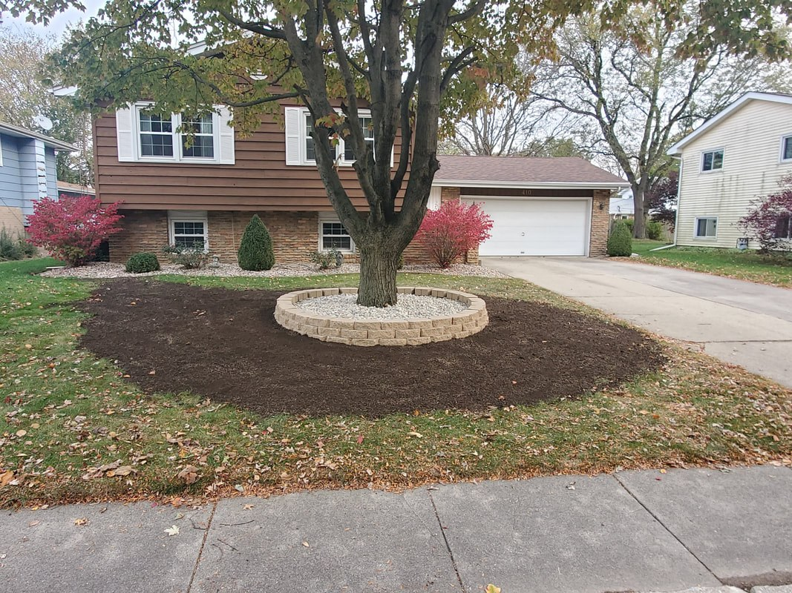
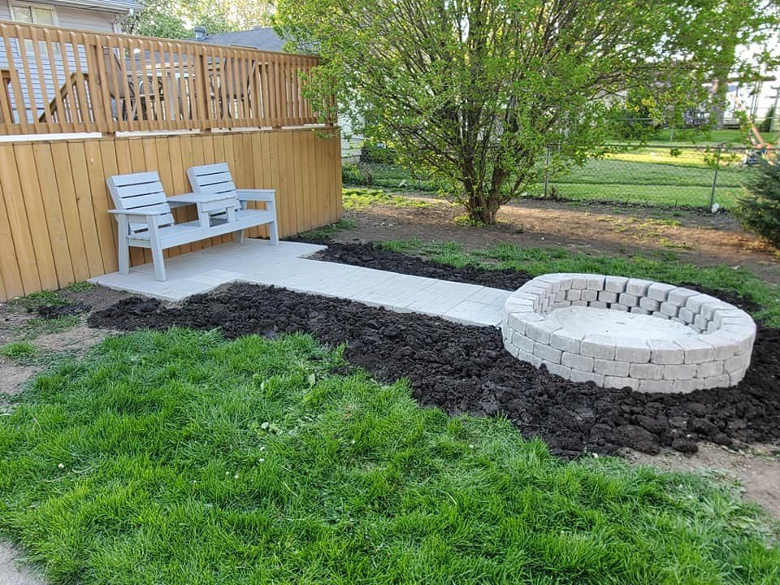
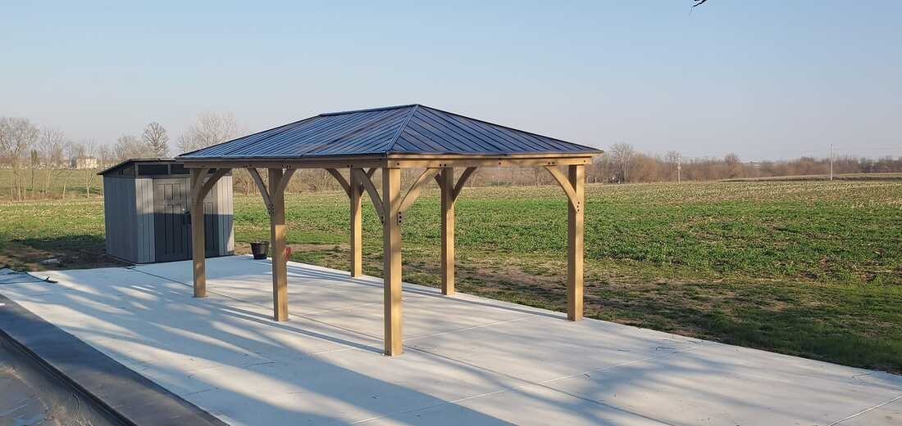
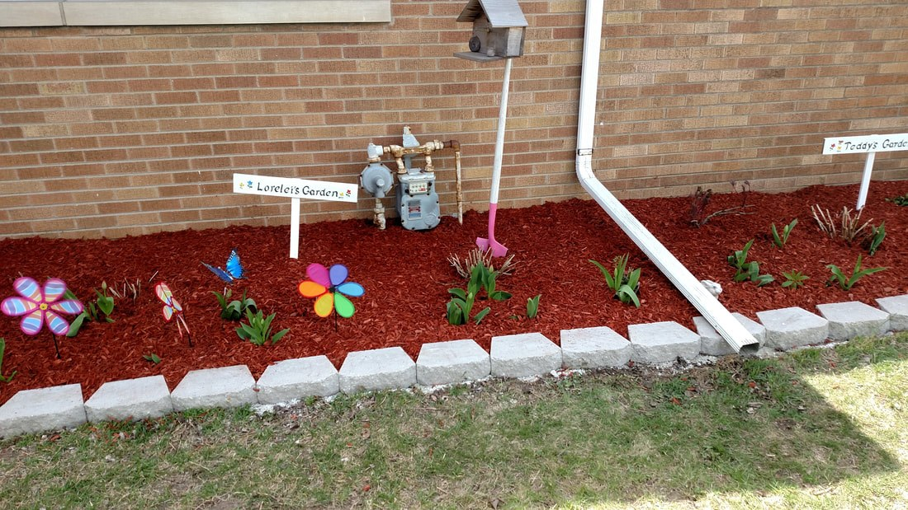
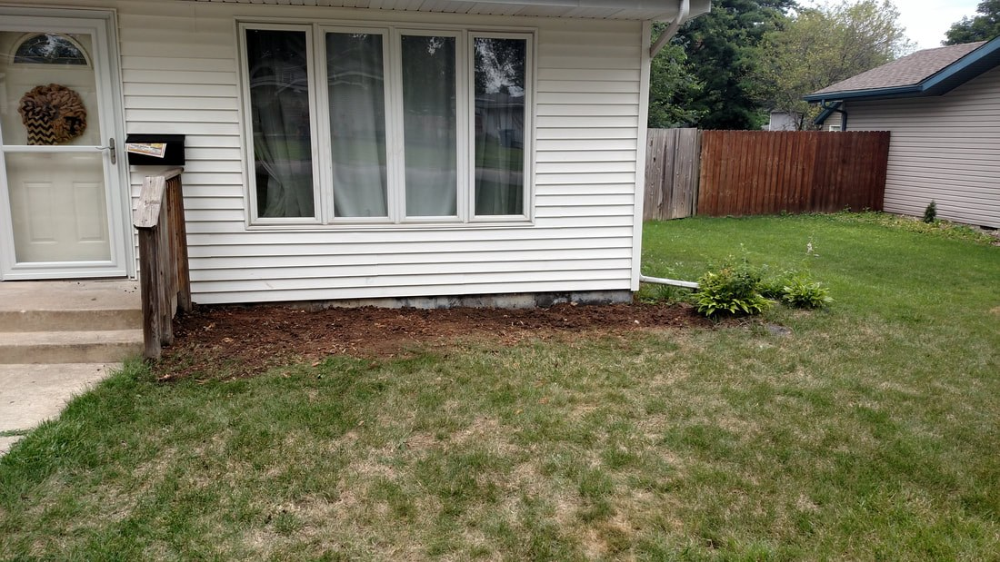
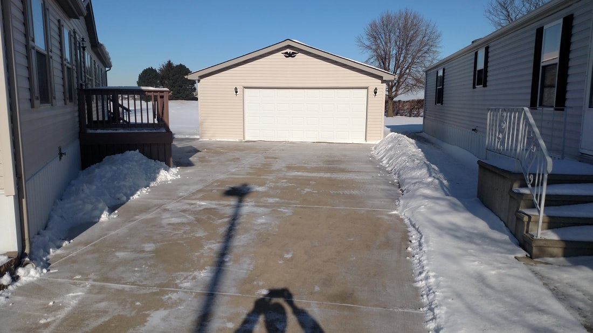

Lawn care & landscaping · Bradley, Illinois
Weekly mowing, landscaping, gutter cleaning and 24/7 snow removal for homes and businesses across Kankakee County.
Residential and commercial. Every service starts with a free estimate.
Turf cut at the right height for the time of year, trimmed around trees and edged along walks and drives, with clippings blown back into the lawn.
Flower bed design, mulch, rock, sod, new trees and shrubs, and hardscapes like fire pits and patios.
Trees trimmed up to about 20 feet with pole saws and chainsaws, shrubs shaped, and all the debris hauled off.
Gutters cleared on single-story homes, garages and sheds, and driveways, walks, decks, siding and fences washed clean.
On call 24/7 all winter. Service usually starts at two inches, and sooner if you'd rather.
Fire pits, patios, edging and fresh beds by GC Martin.






Grant Martin and his wife Christina own GC Martin Lawn Care & Landscaping. Grant has been in and around lawn care and landscaping for more than 20 years.
Hard work, honesty, reliability and caring about every job as if it were his own are what Grant counts on to keep the business going for years to come.
We treat our customers' homes and businesses as if they were our own.
When we agree to a service, you can count on us showing up when we said we would.
We work hard to make sure it's a quality job the first time, every time.
Exceptional, quality work at a fair price, backed up with service.
Call or email and tell us what your property needs.
Bradley, Kankakee County and surrounding towns.